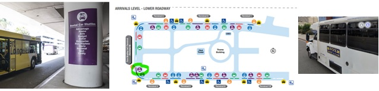
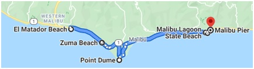
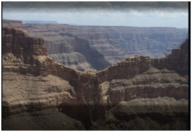
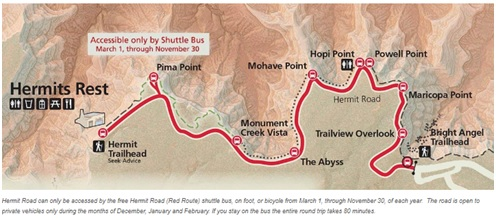
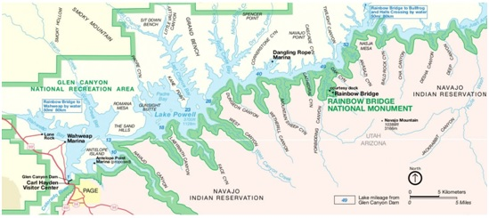

SIM: Holafly 15 días · 55,10 € · Activar al menos 3 días antes · La SIM se activa entre las 00:00 y las 09:00h hora Chicago · Comparte datos hasta 7GB · Coche: Europcar / FOX Rent A Car · Reserva 1140112613 · Chrisler 300 3.6 o similar · Acceso a línea PRIORITY en agencia FOX · Moneda: Dólar estadounidense · Conducción: Por la derecha · Propinas: 15-20% habitual en restaurantes
Preparativos — Activar tarjeta Holafly
Preparativos — Reserva de asiento y taxi
Los Ángeles — Llegada
Vuelo AMS→LAX: Vuelo KL0601 operado por KLM · Salida 09:50h por puerta D10 o G4 · Llegada 11:50h Los Angeles International Terminal B
Coche de alquiler: Europcar / FOX RENT A CAR · Referencia 1140112613 · Chrisler 300 3.6 o similar · Ir a la zona de autobuses de coches de alquiler (color morado, coche con llave) · Esperar bus de FOX a 5500 W Century Blvd 90045 Los Angeles · 3 km / 4 min · Acceso a línea PRIORITY en agencia FOX

The Chadvick
3333 W 2nd · APT 54-216 · 22 km / 21 min desde FOX location
Por determinar con Ismael
Cenar donde Ismael diga. Volver al apartamento.
Malibú · Santa Mónica · Venice Beach

Surfrider Beach
Una de las zonas más conocidas por los surfistas. Playa enorme con olas perfectas para surfear.
El Matador Beach
Una de las playas más románticas y bonitas de California. Paisaje rocoso y aguas muy cristalinas. Perfecta para ir al atardecer, cuando los colores del sol la hacen mágica. Será el punto más al oeste en el que habremos estado.
Zuma Beach
La playa más popular de Malibú y también la más grande. Una de las playas más concurridas de la zona, con bares y restaurantes donde tomar algo.
Point Dume
Playa más difícil de acceder, pero perfecta si gustan las playas de roca y la tranquilidad. Muy cerca de Zuma Beach.
Malibu Lagoon State Beach + Malibú Pier
Hermoso lago pegado a la carretera donde el Río Malibú se une con el Océano Pacífico. Alrededor: mansiones gigantescas y embarcaciones privadas. Visitar el Malibú Pier y desayunar.
Muelle de Santa Mónica + Pacific Park
El lugar más conocido del distrito. De madera, crea un ambiente bucólico. Visitar antes del anochecer para ver la puesta de sol. Al final del muelle, pasado el Bubba Gump Shrimp, está el letrero del Final de la Ruta 66. Subirse a la famosa Noria de Santa Mónica para unas vistas inmejorables de Los Ángeles y el Pacífico. Pasar por debajo del muelle.
Venice Beach
Lo más interesante no son sus playas sino el colorido paseo y sus espectáculos callejeros. Distrito muy concurrido por artistas bohemios. Se puede palpar la esencia de las culturas urbanas de California. Recreación de los canales de Venecia (6 canales originales). Ver la Venice Sign en el cruce de Windward Ave y Pacific Street, especialmente al atardecer cuando se ilumina. Ver el Muscle Beach (gimnasio al aire libre), canchas de basket y skate park. Alquiler de bicis: 7-15$ (efectivo, si no +3$).
Pedir un Cabify para volver al parking de Santa Mónica a recoger el coche. Después, vuelta al apartamento de Ismael · 23 km / 22 min.
The Chadvick
3333 W 2nd · APT 54-216
Los Ángeles — Hollywood y Lakers
Beverly Hills Sign + Rodeo Drive
Visita al cartel de Beverly Hills. Bajar por la famosa calle Rodeo Drive, ambientada en la escena de Julia Roberts en Pretty Woman.
Walk of Fame — Hollywood Boulevard
Más de 2.500 estrellas dedicadas a artistas como Robert De Niro, Michael Jackson, Alejandro Sanz, John Lennon, Walt Disney o Donald Trump. Más de 10 millones de personas lo recorren cada año.
Teatro Chino de Grauman
Obra magna de Sir Grauman, abierto en 1927 con el estreno de "Rey de Reyes". En el exterior: huellas de manos y pies de más de 200 famosos (Shirley Temple, Sophia Loren, Jackie Chan, Marilyn Monroe…). En 2013 se convirtió en el cine IMAX más grande del mundo. Más de 4 millones de visitantes al año.
Dolby Theatre
Sede de los Óscar desde 2002. Ofrece tour guiado por sus instalaciones (no visitable por libre). Sin la ceremonia, puede parecer "pequeño" en comparación con las expectativas. No imprescindible.
Staples Center — Lakers vs Orlando Magic
Ir a recoger a Ismael y al Staples Center en coche (parking ~10$) o en metro (línea B roja en Wilshire/Vermont, 2 paradas, bajarse en 7th St + 1,2 km · 1,75$). Mejor opción: Bus 14 desde Beverly Boulevard (700 m) · parada Beverly/Hoover · 7 paradas · cambio a bus 37 (ID parada 9003) · 9 paradas más hasta Grand/11th · 500 m al estadio. Cerveza: +12$ · Pretzel: +5$.
The Chadvick
3333 W 2nd · APT 54-216 · Cenar y volver al apartamento tras el partido
Universal Studios Hollywood
Entradas: General 114$/pax · Residentes California 104$/pax
Horario: 10:00 – 17:00h · Consultar diciembre en universalstudioshollywood.com
Studio Tour
Tour turístico por diferentes estudios de cine y TV de Hollywood. Platós de películas y series famosas, efectos especiales (La Guerra de los Mundos), y espectáculo final de Fast and Furious. Narración disponible en español con Carmen Villalobos en días selectos. Ir a primera hora para evitar colas.
The Wizarding World of Harry Potter
Zona dedicada al mundo de Harry Potter. Las calles transportan a las películas. En sus restaurantes: la famosa Cerveza de Mantequilla. Visitar la tienda de Ollivanders y elegir tu propia varita para usar hechizos por el parque de Hogwarts.
WaterWorld
Espectáculo con tiroteos, explosiones y hasta un accidente aéreo. Escenas de acción al nivel de Hollywood.
The Simpsons
Inspirada en el centro de Springfield: hamburguesería Krusty Burger, bar de Moe, centralita de Homer. Atracción principal: montaña rusa de realidad virtual con los personajes de la serie.
Jurassic Park
Barcas que pasan por la jungla con dinosaurios en su hábitat natural. Termina en una caída que deja helado.
Cerca del parque: calle con bares, restaurantes y tiendas ambientadas en Hollywood. Indoor Skydiving, sala de fiesta Howl at the Moon, grandes salas de cine. Shuttle gratuito entre CityWalk y el parque, 7 días a la semana, cada 15 minutos.
San Diego
La Jolla Cove
Los leones marinos son típicos de California. Se pueden ver también en el puerto de San Francisco, pero en La Jolla Cove están en la misma playa bañándose. Una experiencia única.
Old Town San Diego
El casco antiguo preserva el período histórico de 1821 a 1872 (desde la independencia de México hasta la conversión de San Diego en estado de EEUU). Calles sin asfaltar, gente vestida de época, tiendas con productos artesanales. Old Town Market: antiguo mercado de 1800 con tiendas, artesanos y restaurantes. Horario atracciones (oct–abr): lunes a jueves 10:00–16:00h.
USS Midway Museum
El barco más grande del mundo cuando fue diseñado en 1945. Se retiró en 1991 y ahora sirve como museo en San Diego. Más de 30 aviones restaurados y casi 10 acres de exposiciones. Ver primero el corto sobre la Batalla de Midway en el teatro (incluido). Tour de audio autoguiado por la cubierta, dormitorios, hangar y cubierta de vuelo. Voluntarios ex-tripulantes dan vida al barco. Tickets online: 26$ (5$ de ahorro vs taquilla). Dejar al menos 3 horas. Consejo: sin aire acondicionado, llevar agua.
Escultura "Embracing Peace" + Bob Hope
Escultura de 20 pies de altura celebrando el final de la Segunda Guerra Mundial en Times Square. Ver también la escultura de Bob Hope, el comediante que animaba a las tropas. Están en la base naval más grande de EEUU: el Camp Pendleton.
Las Vegas — Llegada por la Ruta 66
Calico — Pueblo Fantasma de la Fiebre de la Plata
Pueblo minero de plata fundado en 1881, abandonado en 1929. Declarado en 2005 por Schwarzenegger como "La Ciudad Fantasma de la Fiebre de la Plata". Restaurado por Walter Knott en los años 50. Solo un tercio de los 30 edificios son originales. 5 edificios originales: Lucy Lane Museum, Maggie Mine (mina de plata de los 1880s), el salón Lil, la galería de Smitty y el Salón Joe. Actividades: recreación de tiroteos, acrobacias a caballo, tren Calico Odessa Railroad, Mystery Shack de ilusiones ópticas.
Hotel Planet Hollywood Resort & Casino
Check-in electrónico, sin personal en el lobby. Restaurante Ocean (rico y económico). Centro comercial con tiendas y restaurantes en el primer nivel. Show de Criss Angel MINDFREAK: miér-dom a las 19h (esos días puede que no actúe). Parking: incluido pero bastante lejos (caminar por el centro comercial Mirage en 13 Audrie St).
Bellagio — Fuente y Conservatory
Show de luces y agua cada 30 minutos. El interior sorprende con más de 2.000 flores de cristal decoradas por el Circo del Sol. En el Bellagio Conservatory (detrás de la fuente, zona del parque): árbol de Navidad de 42 pies coronado con estrella de cristal de Swarovski.
Las Vegas — El Strip y Fremont Street
Linq Promenade — Desayuno
Calle comercial abierta en 2014 con restaurantes, tiendas y entretenimiento. Destacan: American Beer & Cocktails (70 cervezas en lata de los 50 estados) y el Minus5 ICEBAR (todo hecho de hielo, por debajo de 5°C, dan parka y guantes). Entrada única válida todo el día en el ICEBAR.
High Roller — La noria más alta del mundo
167 metros de altura, récord Guinness de noria de observación más alta del mundo. 28 cabinas de cristal de 28 m² para hasta 40 personas. Audio y 8 pantallas con puntos de referencia. 2.000 bombillas LED. Evitar colas: ir martes o miércoles. Inaugurada en 2014.
The Venetian
El hotel más espectacular de la ciudad. Han recreado Venecia al detalle: canales con agua, Puente Rialto, Gran Canal, Plaza San Marcos, Campanile. Imprescindible: ir al lobby porque está decorado de Navidad.
Caesar's Palace
Tematizado como la Antigua Roma. Fuentes alucinantes y el enorme Teatro Coliseo con espectáculos semanales. De noche también es muy bonito: iluminan sus fuentes.
ARIA Resort & Casino
Pastelería buenísima. Este año exhibición navideña con bola de nieve de 8 pies (200 paneles de azúcar), árboles hechos a mano con 1.000 macarons franceses y un hombre de pan de jengibre de 6 pies (100 libras de chocolate amargo). Novedad: "Sugar Palace" en el Chalet Alpine Themed Restaurant.
New York-New York · Excalibur · Luxor
New York: Simula el skyline de Manhattan, con Estatua de la Libertad gigante. Excalibur (410m): castillo basado en el Rey Arturo, precioso iluminado. Preguntar por espectáculos en recepción. Luxor (540m): la pirámide más espectacular de Las Vegas, parece un OVNI. De su cúspide sale un haz de luz visible a kilómetros en el desierto de Nevada.
Stratosphere Tower — Miradores y atracciones
La Torre Stratosphere (350 m, inaugurada 1996) es el edificio más alto de Nevada. Dos miradores a ~280 m: uno interior con paredes oblicuas de cristal (vértigo garantizado) y uno exterior con perspectiva 360° de la ciudad. Atracciones en la cima: X-Scream (montaña rusa que te saca de la torre a 300 m), Insanity the Ride (carrusel giratorio exterior) y Skyjump (puenting desde 260 m de altura). Parking gratuito exterior (OJO: valet = aparcacoches con propina).
Fremont Street Experience
220 altavoces de 550.000 vatios y la pantalla LED más grande del mundo. Conciertos, shows, restaurantes locos. Bóveda de cañón de 27 m de alto y 416 m de longitud con 2,1 millones de bombillas y 65.000 combinaciones dirigidas por 36 ordenadores. Espectáculo de 10 minutos cada hora en punto al caer la noche. Tirolina Fremont: 450 m a 30 m de altura. En el techo: casinos clásicos Golden Gate y 4 Queens. El Golden Nugget (1946) es el casino más antiguo de la ciudad con la pepita de oro más grande del mundo en exhibición: "La Mano de la Fe" (27,2 kg).
Heart Attack Grill
Comedor con temática hospitalaria. Las enfermeras-camareras visten de hospital. Menú: hamburguesas de hasta 8 pisos (hasta 19.900 calorías) y Coronary Dog. Patatas fritas en manteca, batidos de mantequilla reales, chupitos de vodka en jeringuilla y cigarrillos Lucky Strike sin filtro. Si no terminas: 3 azotes públicos. A partir del Quadruple Bypass, te llevan en silla de ruedas al coche. Si pesas más de 160 kg: comes gratis. Coger taxi para volver al hotel (7 km).
Grand Canyon West Rim — Lago Mead · Presa Hoover · Seligman
Lago Mead — El mayor lago artificial de EEUU
Formado por las aguas recogidas por la Presa Hoover, se extiende 180 km detrás de la presa. Su agua se envía por acueductos a comunidades del sur de California y Nevada. 8-10 millones de visitantes anuales. 5º parque nacional más visitado de EEUU. Ofrece ensenadas con acantilados rocosos, playas arenosas y varias islas. En ocasiones se pueden ver las ruinas del pueblo de St. Thomas cuando baja el nivel del agua.
Presa Hoover
Presa de hormigón de arco-gravedad en el río Colorado, en la frontera Nevada-Arizona. Construida entre 1931 y 1936 durante la Gran Depresión, completada dos años antes de lo previsto. Antes de la presa, el Colorado se desbordaba al derretirse la nieve de las Rocosas. Para evitar la retracción del hormigón fue construida como una serie de ménsulas trapezoidales con tubos de acero de refrigeración; de haberse hecho en un solo bloque, el hormigón habría tardado 125 años en enfriarse y se habría agrietado.
Canyon Café / Hot Diggity Dog
Pueblo genuino del profundo oeste americano. Canyon Café: buena ubicación, excelente servicio y café destacable · 10-20$. Después no hay otro lugar donde comer hasta el Skywalk.
Grand Canyon West Rim — Eagle Point · Skywalk · Guano Point
Precios: Entrada 39$/persona (acceso a Eagle Point, Guano Point y Hualapai Ranch + autobús) · Skywalk: 20$ adicionales · Legacy Gold Package (incluye todo + comida): ~80$/persona.
Hualapai Ranch (1ª parada): recreación de un pueblo del viejo oeste con gente disfrazada, tiendas y restaurantes. Para curiosear, no hacen falta muchas fotos.
Eagle Point (2ª parada): se ve perfectamente la imagen de un águila esculpida por la naturaleza en la roca. Zona regentada por la tribu Hualapai.
Skywalk: inaugurado el 20 de marzo de 2007, permite estar 1.300 metros sobre el vacío. Bucle de 22 m en horizontal sobre el Colorado. Plataforma de 500 toneladas, cristales de más de 10 cm. Aguanta 800 personas (se permiten 120 a la vez) y vientos de hasta 160 km/h. No dejan llevar cámara ni móvil: si quieres foto, la hacen dentro por 16$. Dejar los bártulos en taquilla y ponerse calcetines protectores.
Guano Point (3,6 km, 3ª parada): sin duda el mejor mirador del West Rim, competiendo con los del South Rim. Subirse a las rocas y contemplar el cañón desde esa altura es una pasada. No paran de pasar helicópteros. El nombre viene de que en 1930 se descubrió una cueva con 100.000 toneladas de guano de murciélago que se explotó como fertilizante.

Elegir el paquete de bus, el más económico: los autobuses hacen el recorrido continuamente entre los 3 puntos. Comer en el coche de camino a Seligman.
Deluxe Inn Seligman
En la calle principal de Seligman, donde se concentran todas las atracciones de la ciudad
Subway
A las afueras de Seligman.
Grand Canyon South Rim — Hermit Road · Miradores
Seligman — Ruta 66 por la mañana
Desayunar en Westside LILO'S Café. Foto en la gran bandera de EEUU pintada en la fachada de The Historic Seligman Sundries (9:00–18:00h, 170 m del hotel): coches y camionetas clásicos americanos en el exterior. Copper Cart / Route 66 Motoporium: antigua gasolinera remodelada con aspecto vintage, colección de motos y coches de los 50, neón y furgoneta VW surfera "tuneada". Return to the 50s Museum. The Rusty Bolt: la tienda más rodeada de cultura de la ruta. Angel & Vilma Delgadillo's Route 66 Gift Shop: la barbería más famosa de la Ruta 66, justo a la derecha del hotel.
Amanecer/atardecer (15 dic): 07:32h / 17:15h · Total: 9h43 de luz
Hermit Road (línea roja): Operativa de 5 am hasta 1h después del atardecer · En diciembre se puede ir con el coche propio (los buses pueden no funcionar) · Dejar el coche en el parking de arriba
Hermit Road — Ruta de miradores (de este a oeste)
Sendero que recorre los mejores miradores del Gran Cañón. Se puede hacer a pie o en el bus rojo (incluido en la entrada). En diciembre, ir en coche propio.
Travelview Overlook (1ª parada): vistas del famoso Bright Angel Trail, una de las rutas de senderismo más conocidas del Gran Cañón.
Maricopa Point: plataforma panorámica con barandilla. Vistas 180° al río Colorado serpenteando al Horn Creek y el butte Dana. Una de las fotografías más bonitas del Gran Cañón. Un hombre murió colocando la barandilla; algunos días puede verse una pequeña niebla negra que, según dicen, es su alma.
Powell Point: parecido a Maricopa pero con más panorámica por el lado izquierdo y sin barandilla (permite fotos más guapas). Elegido por el gobierno de Arizona para homenajear al Parque en 1920.
Hopi Point: caída de más de 2.000 metros. Vistas del Trinity Creek con tres formaciones bautizadas con nombres del antiguo Egipto: Isis, Horus y Osiris. Uno de los miradores más increíbles, con panorámica de izquierda a derecha sin ningún obstáculo visual.
Dimishing View: justo al lado de Hopi Point. Perfecto para hacer picnic.
Mohave Point: uno de los mejores lugares para fotografiar el Gran Cañón. Vistas del río Colorado y los rápidos de Boucher y Granite. Más de 100 km de visibilidad con 1.000 m de caída. Las vistas de Monument Creek son posiblemente las mejores de todos los miradores.
Pima Point: último punto, pero no supera las vistas de Mohave. Se puede dejar de lado.

Yavapai Point + Museo de Geología
Uno de los miradores más bonitos del South Rim, a 2.100 m de altura. Junto al mirador, el Museo de Geología Yavapai (8:00–18:00h, construido en 1928): balcón acristalado, mapa 3D de la zona, se ve el río Colorado. También valorar Grandview Point (15 km del parking) y los miradores de Moran Point (11 km), Lipan Point (9,3 km) y Desert View (para ver la puesta de sol junto a la Watchtower de Mary Colter, 1916). En días claros se divisa el paisaje hasta 100 km a la redonda.
Holiday Inn Express Grand Canyon
A 45 km del South Rim · 11 km antes está el Papillon Grand Canyon Helicopters (219$/persona, vuelos de 25-30 min, de 9h a 13h30) — si se quiere hacer el helicóptero, comprar tickets para el domingo 19 a las 09h00
Canyon Pizza
Cenar en Canyon Pizza, Tusayan.
Page — Horseshoe Bend · Lago Powell · Glen Canyon Dam
Si no se hizo el helicóptero sobre el Grand Canyon, ir a ver la salida del sol: aparcar en el parking del centro de visitantes (11 km / 14 min) y subir al Mather Point (uno de los mejores lugares del South Rim para ver el amanecer). Estar allí sobre las 7:15h. Si hay mucha gente, caminar un poco hacia la izquierda.
Horseshoe Bend
Curva que dibuja el río Colorado con forma de herradura: una de las imágenes más espectaculares de la Costa Oeste. 2 millones de turistas al año. Hay salientes y recovecos para quien no quiera compartir selfie, pero cuidado: todos los años muere alguien, no arriesgarse. Llevar buenos zapatos y agua. Ahora tiene parking de pago, pérgolas de sombra y mirador delimitado.
Denny's — Page
Comer en Denny's en Page.
Lago Powell + Glen Canyon Dam
El segundo lago artificial de EEUU, creado por la presa Glen Canyon Dam (1963). Tardó 17 años en llenarse. Más de 3.000 km de costa, 300 km de largo, 3 millones de visitantes anuales. Empezar en el Carl B. Hayden Visitor Center (junto al puente, justo al salir de la presa, 5$): historia de la construcción a través de láminas a más de 160 m de profundidad; contador digital con el dinero recaudado por los 56 millones de litros de agua por minuto que pasan por sus turbinas. La presa se construyó con 10 millones de toneladas de hormigón (220 m de altura, 100 m de ancho en la base).

Wahweap Marina — Excursiones en barco
Puerto deportivo más popular del Lago Powell. Dos excursiones posibles (salidas desde aquí, ahora cerradas en Lake Powell Resort): Antelope Canyon Tour (48,33$ · 2h): sección inundada del famoso cañón. Canyon Adventure Boat Tour (77$ · 3h): visita los dos cañones más famosos, Antelope y Navajo. También se puede ir a Antelope Point Marina (28 km / 39 min) para alquilar lancha (75-100$/hora). Parar antes en el Navajo ViewPoint.
Best Western View of Lake Powell Hotel
Page, Arizona
Lower Antelope Canyon · Bryce Canyon
Lower Antelope Canyon — Ken's Tours
El cañón de ranura más famoso de la Costa Oeste. Permaneció oculto a pocos kilómetros de Page hasta que un par de fotógrafos dieron con él. Tour obligatorio con guías Navajos. El mejor momento es al mediodía cuando entran los rayos de sol. Tour dura 45 min – 1h, longitud total 1 milla, todo a pie.
Entradas: 2 tickets comprados por 64,66$ (59,86€) cada uno, incluyendo impuestos y entrada (8$) en la reserva Navajo · Tours para las 09:00h · Recordar que estamos en ARIZONA TIME
Cancelación: 72h antes para reembolso (el 6% de recargo no es reembolsable). Sin reembolso en menos de 72h. Si se cancela por lluvia, reembolso total.
Si Ismael viene, comprar otra entrada en kens.avtrax.com
Bryce Canyon — Anfiteatro principal
No es un cañón propiamente dicho: es una sucesión de anfiteatros naturales creados en la ladera de una meseta de roca sedimentaria. Famoso por sus hoodoos (columnas irregulares de roca formadas por erosión del viento, agua y hielo): la mayor concentración del mundo. Los colores rojo, naranja y blanco crean vistas espectaculares. Más alto que el vecino Parque Nacional Zion y que el Gran Cañón. Parque nacional desde 1928, ocupa 145 km².
Centrarse en: miradores de Inspiration Point y Sunset Point (salen senderos circulares de 1-2h entre las chimeneas). Entre Sunset y Sunrise Point: Queens Garden Trail + Navajo Loop, uno de los trekkings más bonitos de la Costa Oeste (5 km total). Hacer solo el tramo de Sunrise Point a Queen Victoria Benchmark (1,4 km ida + vuelta) · Del parking de Sunrise al mirador: 530 m.
Nota: ya no está operativo el servicio de bus ni los caballos.
Best Western PLUS Ruby's Inn
Cenar antes en un restaurante mexicano de la zona.
Bryce Canyon — Death Valley · Longstreet Inn
Bryce Point + Sunrise Point
Últimas vistas del anfiteatro de Bryce Canyon al amanecer desde los dos mejores miradores.
Mossy Cave
Cueva que en invierno congela el agua y forma témpanos en su cavidad. Corta caminata desde el parking.
Longstreet Inn & Casino
Auténtico casino-motel en mitad de la nada con música en directo country por la noche. Habitaciones con balcón propio y vistas al estanque con patos. Piscina climatizada y jacuzzi gratuitos hasta las 22h al aire libre. Pequeña granja con vacas, burros y ovejas. Dos buenos restaurantes y supermercado abierto 24h. Buena señal wifi. Ojo con las moscas al llegar: avisar en recepción, te cambian de habitación sin problema. Desayuno: hamburguesas, burritos y carne a la parrilla.
Death Valley National Park
El lugar más caluroso de la Tierra (récord: 57°C en julio de 1913). En diciembre: máx. 18°C / mín. 3°C. Llevar y beber al menos 1 galón (4 litros) de agua. Sin cobertura de móvil. El GPS frecuentemente recomienda "atajos" por caminos sin asfaltar (ilegal y multa de 750$ mínimo). Pase de 7 días: 30$. Dark Sky Park con rating Gold: miles de estrellas visibles de noche.
Zabriskie Point
Vistas de un lago muerto. Hace 5 millones de años todo este paisaje era agua; ahora quedan los sedimentos en forma de tonos amarillos intensos, los más vivos de todo el parque. La tierra se ha "arrugado" dejando al descubierto capas geológicas fascinantes.
Furnace Creek — Centro de Visitantes + Borax Museum
Registrar visita mostrando el Annual Pass (Death Valley no tiene garita de entrada). Visitar el Borax Museum.
Harmony Borax Works
Planta de extracción de bórax abandonada que se utilizaba para fabricar jabón.
Mesquite Flat Sand Dunes
Lugar precioso por el contraste entre las dunas y las montañas al otro lado del valle. Recuerda al Sahara africano. Antes de llegar hay un punto de localización brutal (a 17 km del parking).
Golden Canyon
Buen lugar para refugiarse en las horas centrales del día, a la sombra de las paredes del cañón. Fue utilizado en varias escenas de La Guerra de las Galaxias.
Artist Drive + Artist's Palette
Carretera que fluye suavemente durante 9 millas hasta el punto más famoso: la "paleta del artista", donde las rocas muestran una gama extraordinaria de colores.
Devils Golf Course + Dry Fall Cascada
El punto más extraño del parque: la evaporación del Lago Manly dejó al descubierto toda la sal, que el tiempo y la erosión han tallado en formas curiosas. Seguir 2,5 km hasta el parking (tramo de tierra) y luego 1,1 km andando hasta Dry Fall Cascada.
Badwater Basin
Uno de los lugares más bajos del planeta: 84 metros por debajo del nivel del mar. Caminar sobre unas salinas protegidas donde se registran las temperaturas más altas del parque. La belleza hexagonal que las salinas dibujan en el suelo embellece el paisaje de forma única.
De Death Valley a Los Ángeles — Farmers Market
Farmers Market — Navidad
En diciembre y enero celebra la Navidad con decorado especial, luces, música clásica, elementos artesanos y karaoke navideño. Coros que cantan villancicos con trajes Dickensianos.
Grand Central Market
Concentra muchos puestos gastronómicos: italiana, mexicana, tailandesa, asiática, pizzerías, puestos de dulces y bebidas. Tanto fast-food como restaurantes reconocidos.
The Chadvick — Apartamento de Ismael
3333 W 2nd · APT 54-216
Vuelta a Barcelona — LAX → CDG → BCN
Vuelo LAX → CDG: Salida 15:25h · Terminal B, puerta habitual 221 · Vuelo AF0065 operado por Air France · Check-in límite: 14:25h · Llegada 11:15h (D+1) · Aéroport Charles de Gaulle Terminal 2E
Vuelo CDG → BCN: Salida 12:25h · Terminal 2F · Vuelo AF1648 · Check-in límite: 11:45h · Llegada 14:10h · Aeropuerto Barcelona Terminal 1
🎉 Fin del viaje